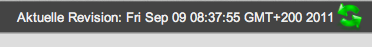

Die Revisionsverwaltung
IP-Scrum ist eine revisionssichere Anwendung, d.h. es lassen sich alle Benutzereingaben im Detail nachvollziehen und jeder konsistente Zustand zur Ansicht wiederherstellen.
Die Oberfläche der Revisionsverwaltung listet alle Zustandsveränderungen anhand ihres genauen Zeitpunktes, des jeweiligen Bearbeiters und der durchgeführten Aktionen untereinander auf.
Die Auflistung lässt sich durch Einsatz verschiedener Filter eingrenzen. Hierzu öffnen sie zunächst den Filterdialog mit Klick auf den Link "Filter" am unteren Rand der Oberfläche.
Sie haben die Möglichkeit den Zeitraum nach Beginn- oder Enddatum einzugrenzen sowie die angezeigten Einträge auf eine Auswahl von Bearbeitern einzuschränken. Alle Filterkriterien können zusätzlich kombiniert werden. Beispielweise führt eine Auswahl eines Zeitraums und Bearbeiter1 und Bearbeiter2 dazu, dass alle Einträge innerhalb des angegebenen Zeitraums angezeigt werden, die von Bearbeiter1 oder Bearbeiter2 durchgeführt wurden.
Der Button "Einträge filtern" aktiviert den Filter, der Button "Filter zurücksetzen" deaktiviert ihn.
Um einen vergangenen Revisionsstand zur Ansicht zu laden, wählen Sie den jeweiligen Listeneintrag aus und betätigen den Button "Selektierte Revision zur Ansicht laden". Die Anwendung startet mit der ausgewählten Revision neu und kommuniziert die Statusänderung über eine kurze Hinweismeldung.
Der Revisionsstatus im oberen Teil der Anwendung zeigt die geladene Revision:

Während Sie in der nicht aktuellen Revision arbeiten können keine Änderungen vorgenommen werden! Änderungsversuche quittiert die Anwendung in diesem Fall mit der Meldung: "Das Modell ist gesperrt!".
Um wieder in das laufende System zu wechseln, klicken Sie auf die grünen Pfeile (Aktualisieren-Button) in der Menüleiste.
Created with the Personal Edition of HelpNDoc: Single source CHM, PDF, DOC and HTML Help creation